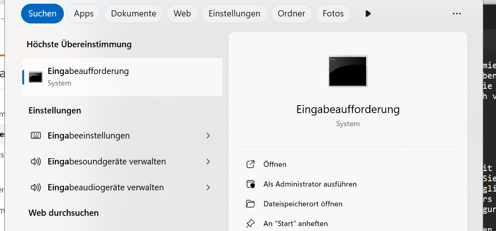
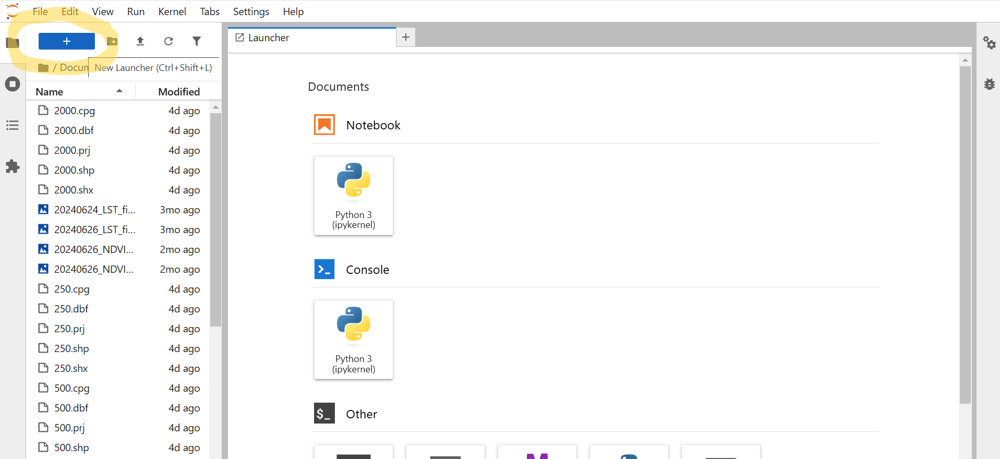
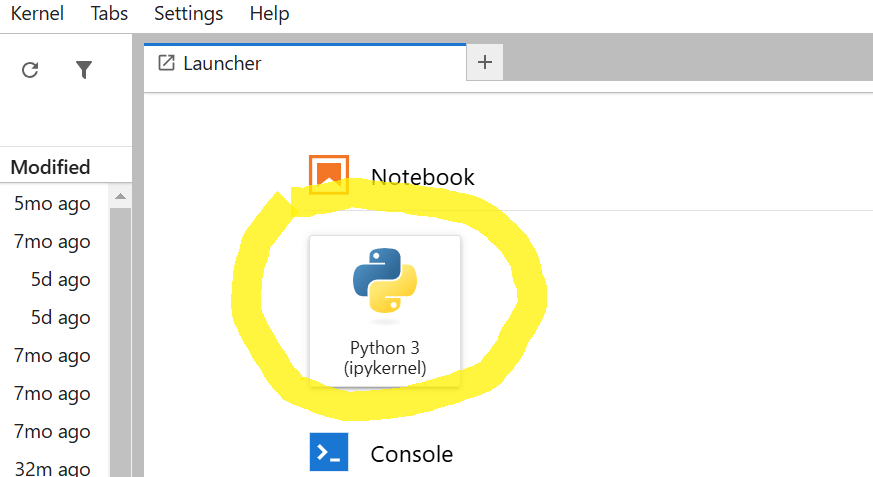

Required Software and Knowledge
Learning Objectives
Installation and setup of the necessary software on a Windows system
Starting Jupyter Notebook to prepare for the course elements
Jupyter Notebooks are a powerful environment for interactive programming, data analysis, and visualization. To use Jupyter Notebooks on a Windows PC, you need the appropriate software infrastructure. The following steps show you how to prepare your computer and which freely available resources you can use to acquire basic knowledge before starting the courses.
Setting up the Infrastructure for Jupyter Notebooks on a Windows PC
During the preparation of the course units, we will occasionally use the Windows Command Prompt (CMD). The Command Prompt is a command-line environment that allows you to interact directly with your operating system by entering text commands. It enables you to start programs, manage files, and control system processes. CMD is particularly useful for developers to run installations or configure tools such as Python and Jupyter.
You can open the Command Prompt by pressing the Windows key (or entering “cmd” directly in the search bar) and pressing Enter (see figure).
A complete reference of commands and syntax can be found in the Microsoft documentation or by entering help in the Command Prompt.
Installing Python or Anaconda
Jupyter Notebooks are based on Python, so you first need to install Python.
1. Python and Pip:
Download the latest version of Python from the official Python website and install it. Ensure that the “Add Python to PATH” option is enabled during installation.
If Python was not automatically added to the PATH, you can configure it manually. The PATH is an environment variable that informs the operating system where to find executable files like Python. To add Python, follow these steps:
Open the Start menu, search for Edit environment variables, and open the corresponding settings.
Click on Environment Variables at the bottom of the window.
In the System variables or User variables section, find the variable Path and click Edit.
- Add a new entry pointing to the installation directory of Python, e.g.:
C:\Python39\ (for Python 3.9)
Additionally: C:\Python39\Scripts\, as tools like pip are located there.
Confirm the changes and restart the Command Prompt to apply them.
After this step, Python should be executable via the Command Prompt using the command python or python3. Test this by entering python –version to verify the installed Python version.
2. Installing Jupyter Notebook
To work with Jupyter Notebooks on your local computer, you need to install the required components. The following guide assumes that you have already installed Python and pip. Open the Command Prompt (CMD) and execute the following commands sequentially:
pip install jupyterlab
pip install notebook
The installation of these components should take less than 5 minutes.
No additional inputs are required during installation.
3. Starting Jupyter Notebook
Once the installation is complete, start JupyterLab using the following command in the Command Prompt:
jupyter lab
A browser window should open, displaying the folder structure of your computer on the first level (e.g., “Downloads,” “Documents,” etc.). Navigate to the folder where you want to start your first notebook.
If the launcher tab does not open automatically, click the “+” icon in the top-left corner:
Now, open a new notebook:
In the upcoming course elements, we will only work with Python3, so kernel selection is not relevant for now. You can complete all course elements using the Python3 kernel. If you later wish to work with various programming languages and Python environments, you should explore the available options.
You have now created your first notebook and are ready to start. Name your notebook – by default, a new notebook is created with the name “Untitled.” You can rename it in the overview on the left with “Right-click > Rename.”
Required Knowledge
Within the CoKLIMAx-II resources, we do not teach in-depth Python skills. The notebooks and learning resources we have developed and provided can be used without prior knowledge. If you are interested in improving your Python skills, we recommend using freely available resources such as those on YouTube.com. For questions and issues while creating your own Jupyter Notebooks, it is best to use the Stack Overflow platform. There are hardly any questions that have not been asked before.